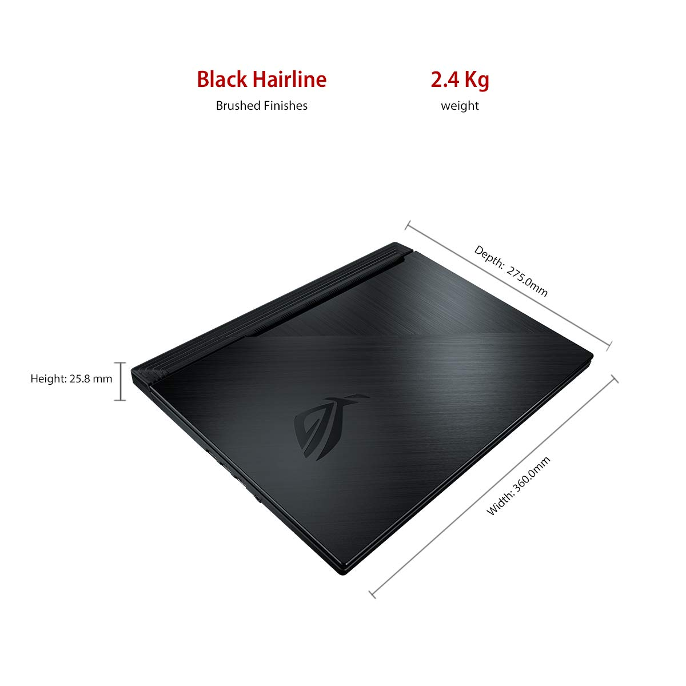

ROG Strix g g531gt
OVERVIEW:
If you are into gaming on laptops, you cannot ignore Asus' ROG series of gaming laptops. Renowned worldwide for its specs,performance and also its big price. But is the price really that huge? The company offers the most comprehensive collection of gaming laptops with so many choices that you will be spoilt for choices. And that's especially when you look at its affordable range of laptops. You got the performance-focused TUF series but its ROG series is the one that offers all the bells and whistles of a modern-day gaming laptop. And that is what the ROG Strix G attempts to do for those who don't want to spend upwards of Rs 1 lakh. The Strix G essentially borrows a lot from the high-end ROG models but with the help of certain compromises, keeps the prices well within everyone's reach.So we will be bringing an in-depth review of this device and see how it fares.
DESIGN:
The ROG Strix G is the most affordable ROG laptop of recent times but if you look at it, you might argue. That's
because the ROG Strix G borrows its design from the more premium Strix Scar 3. The Strix G gets the same thick
and strong metal-plastic chassis with the rigged design theme as seen on the other ROG laptops. It even the
retains the wraparound RGB LED light strip on its edges that takes it an edge above its competition in terms of
aesthetic and looks. The design is done by BMW Design studios and it looks handsome yet aggressive at the same
time. Sadly, the ROG logo on the brushed aluminium lid doesn't glow like its more costly counterparts. Though
you will have to keep in mind that its a bit heavy even for a gaming laptop and its portability is also affected
for this reason.
.
PERFORMANCE:
Asus ROG series is known for its price to performance ratio and this time too Asus takes performance seriously and the ROG Strix G . The base models will get you Core i5 processors and Nvidia's lower-end GTX graphics card but the one I had for testing came with an Intel Core i5-9300H along with the Nvidia GTX 1650 graphics card and 8GB RAM. This is one of the top-end models and hence, performance has been as expected -- flawless. The speed was also helped with 256GB SSD and 1TB SSHD, and hence loading times of games as well as the booting time were significantly faster than the base models with HDD storage. I played a couple of latest gaming titles such as Far Cry 5, Metro Exodus, Witcher 3, Forza Horizon 4, Witcher 3 and Cyberpunk 2077, Call of Duty WW2. Most of these games ran smoothly as it was expected but I had to play around with the graphics settings to get the most out of it. For example, F1 2019 ran on Ultra settings but I had to dial down the resolution to get 60 fps consistently. Same was the case with Cyberpunk 2077 where I avoided going to the Ultra settings and stuck to medium to get a smooth experience. Control managed to stay smooth at 60 fps with a combination of medium to high settings(Some even running on Ultra settings). The Nvidia GTX 1650 can only do so much but again for the price, it makes sense. Even for regular usage, the Strix G offers effortless performance. Working on a document with a couple of Chrome tabs opened in the background as well as streaming music in the background doesn't stress the laptop. Even the battery life is good considering this is a gaming laptop. Without gaming and under normal usage, I managed to get under five hours of battery life at a stretch which is not bad in any way.

DISPLAY:
The display on paper, it looks great as there's a Full HD IPS LCD screen. The screen produced sharp images but the colours aren't as vibrant as you would expect from a gaming laptop.Games and movies look dull than other laptops in this price range. Asus could have offered the Pantone-validated screen from the premium ROG models. Nonetheless, once your eyes get adjusted to the dull screen, it is more than decent for your casual gaming sessions. The viewing angles are wide enough too.
SPEAKERS:
Most affordable gaming laptops come with sub-par speakers and the ROG Strix G doesn't change anything about that. The speakers are just good enough for occasional YouTube binge-watching but for optimum gaming audio performance during gaming, it sis advisable to go fora headphones or external speakers.
CONCLUSION:
The Asus ROG Strix G is overall a great gaming laptop especially when you consider its price. Surely, the display could have been better for a ROG laptop. The performance is smooth and consistent due to its excellent thermal management. Additionally, the aggressive design with the now-signature wraparound RGB LED lighting makes for a gaming laptop that will keep the smile plastered on your face for long.